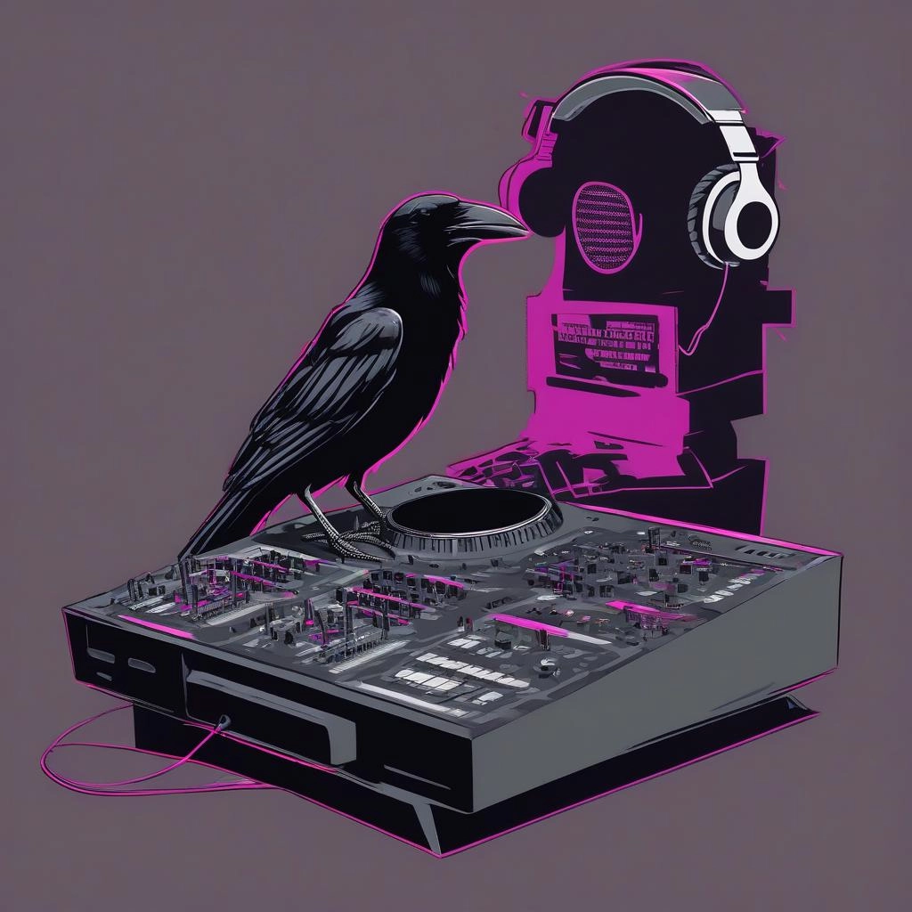
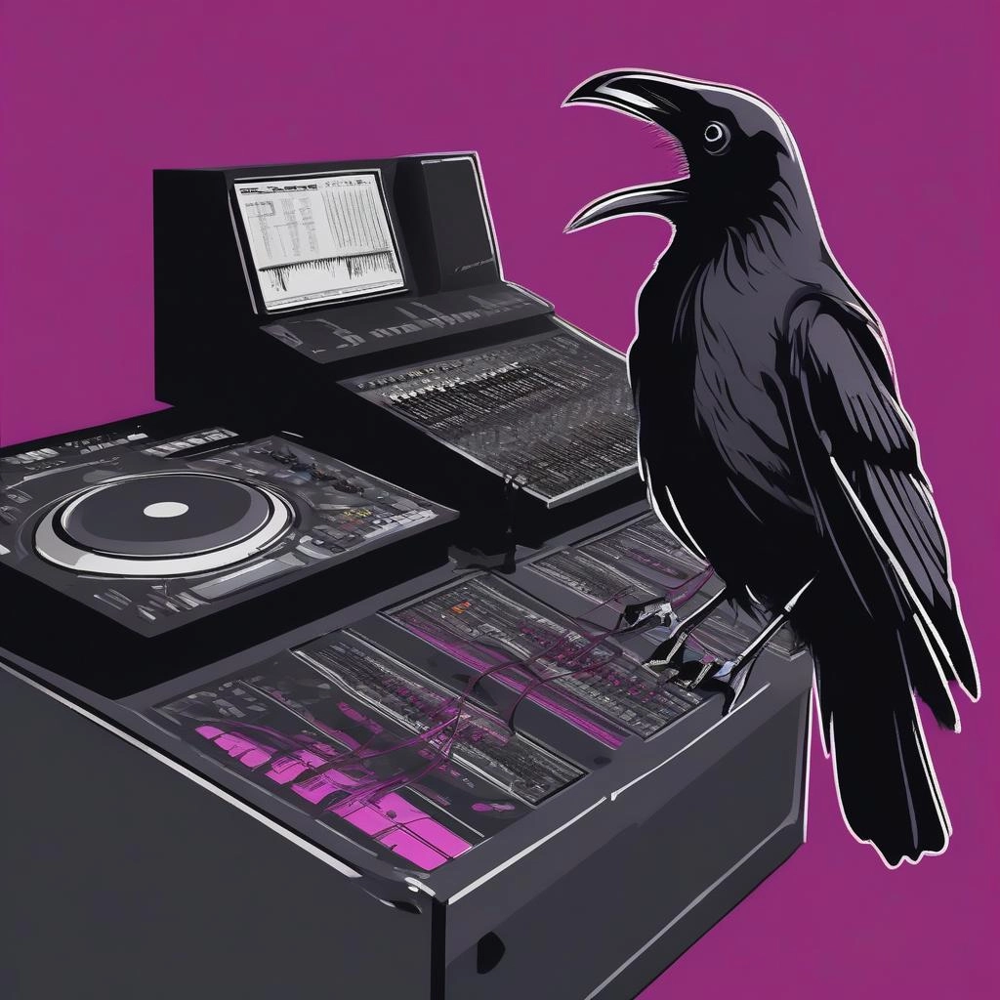
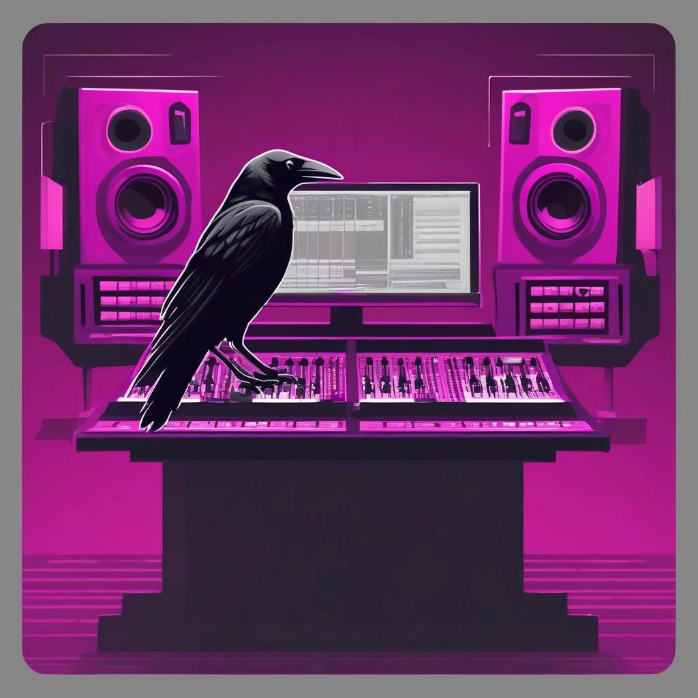
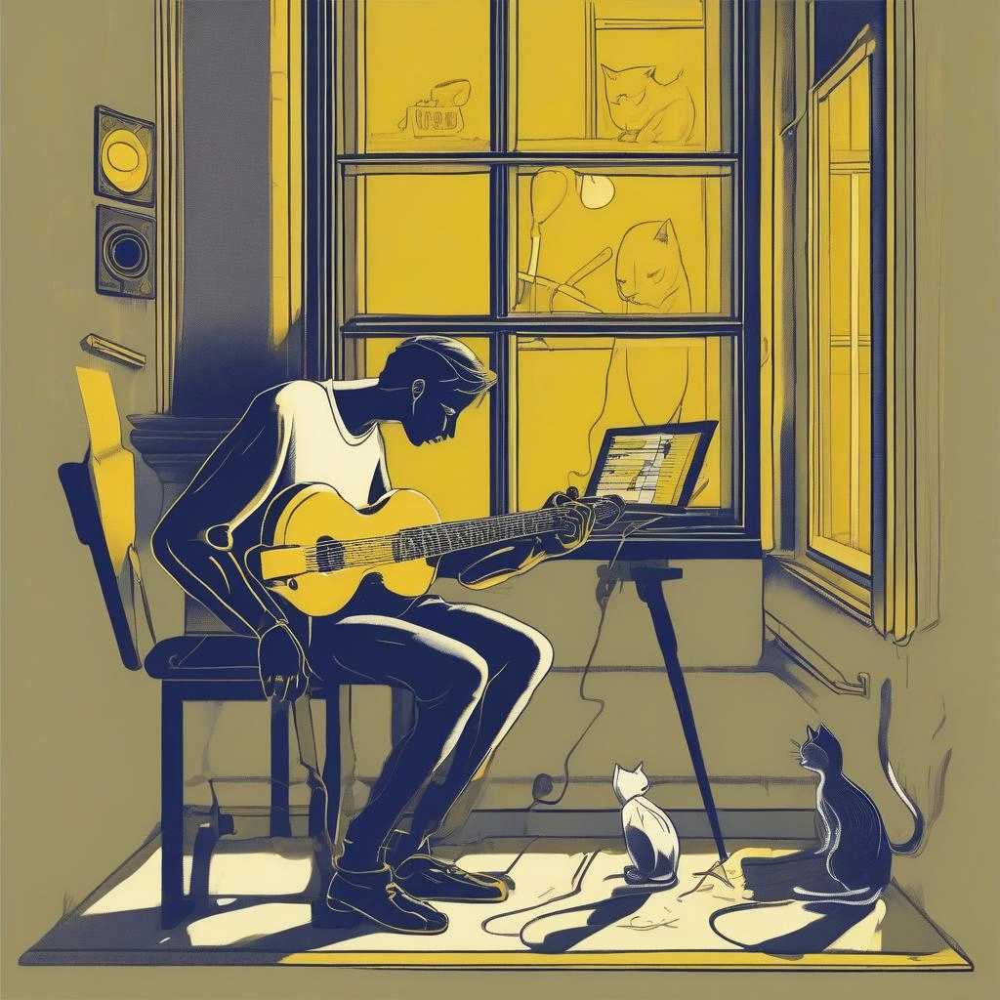
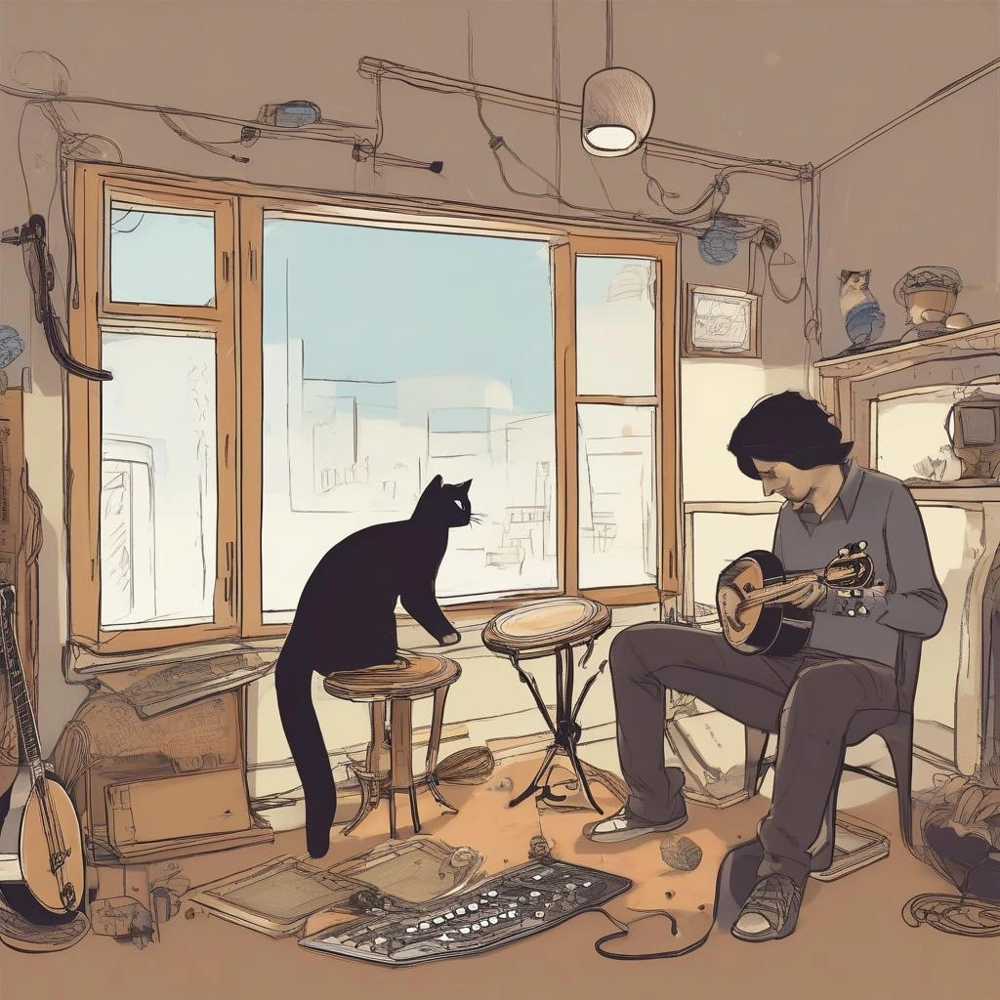
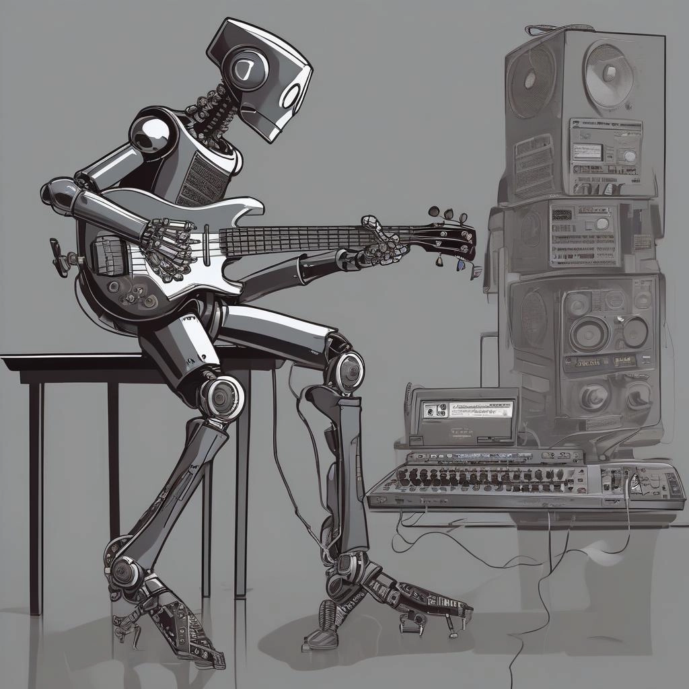
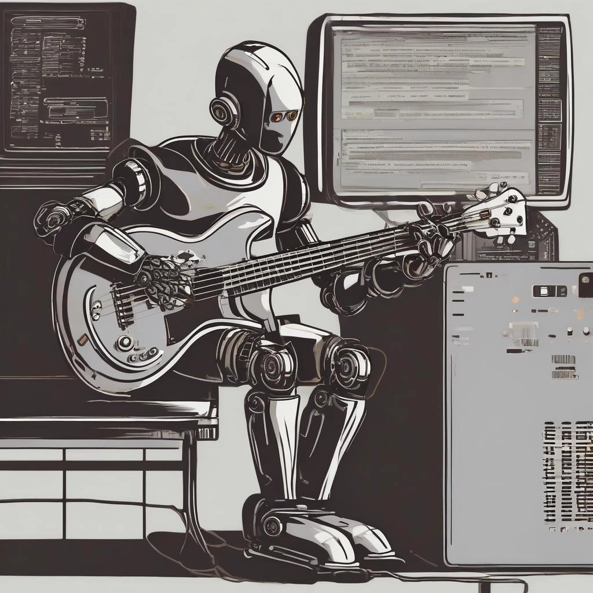
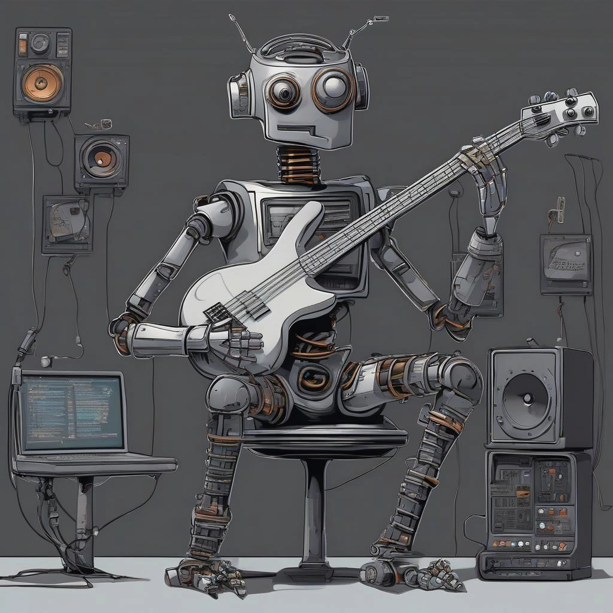
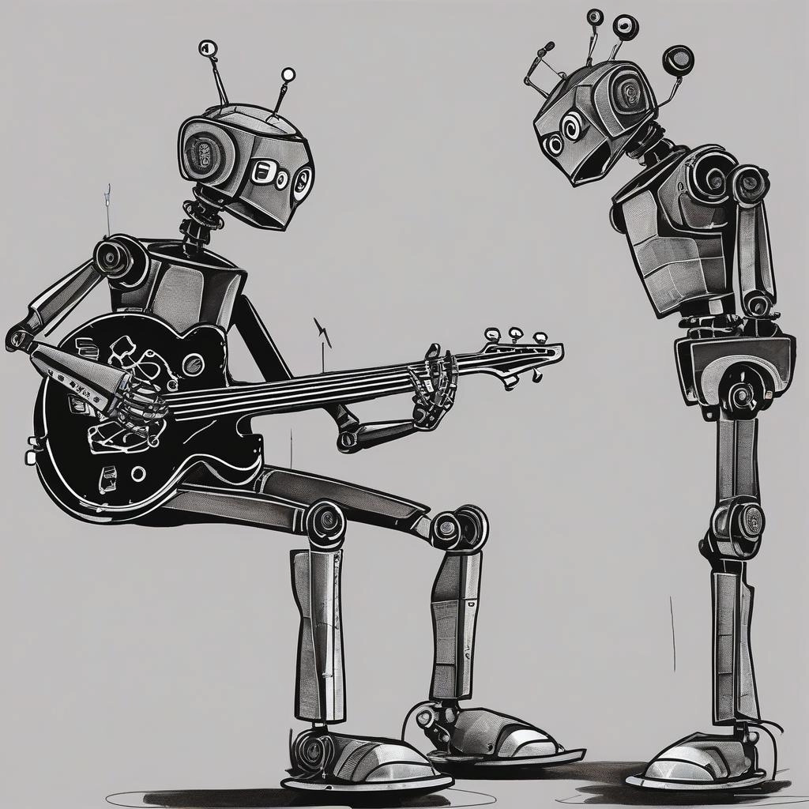
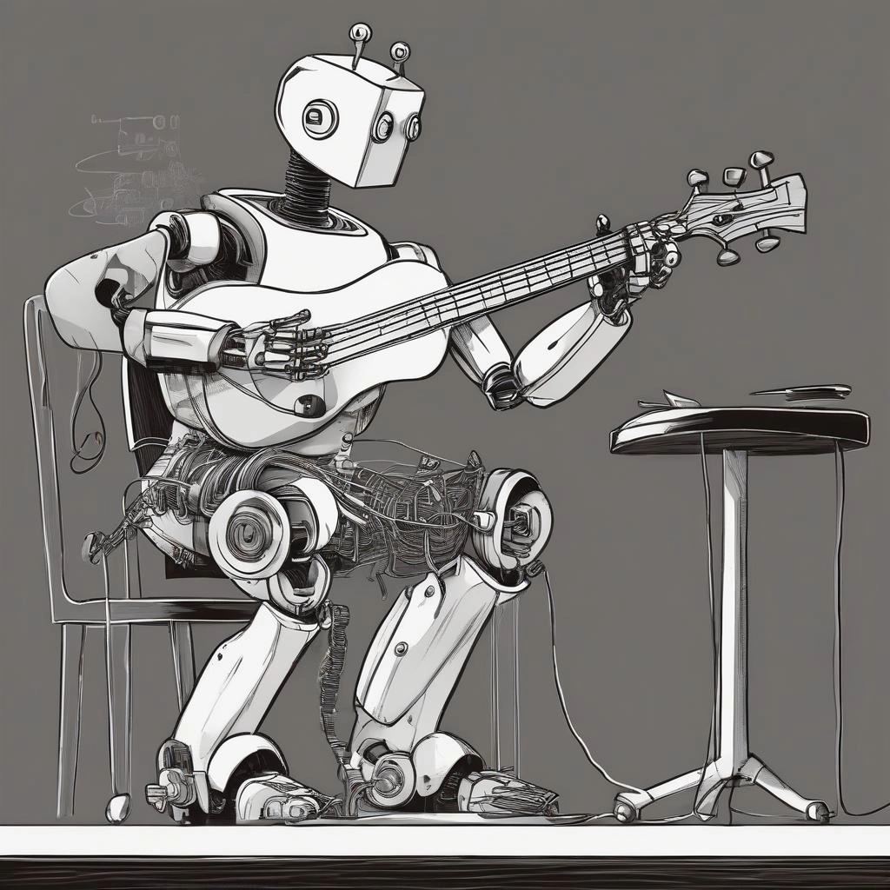

title: Pragmatic Intentions and Grammar in Visual Storytelling
date created: Monday, April 22nd 2024, 11:23:54 pm
date modified: Saturday, May 18th 2024, 1:36:58 pmImages Generated with Fast Stable Diffusion XL on TPU v5e ⚡
a striking illustration of a stylized crow perched on a mixing console. The crow, rendered in a dark gray hue, is facing towards the right side of the image. It's wearing a pair of headphones, suggesting it might be listening to music. The mixing console, also in dark magenta, is positioned on the left side of the image. In the background, there is linux terminal display with text that is monochrome, and it's positioned in the center of the screen. Above the crow, there's a text in white that reads "LAUDGPT". The text is clear and legible, standing out against the dark background. The crow and the mixing console positioned on opposite sides, creating a sense of symmetry. A creative representation of both old and new.




System
title:
{{title}}
selection:
{{selection}}
prompt:
Using the title as context, Assess and determine the pragmatic intention of the selection. Assess how the functional and generative grammar could be adjusted to better realize the intention using imperative tone.
Assistant
- **Assessment of Pragmatic Intention:**
The pragmatic intention of the selection is to convey a visual representation of a stylized crow perched on a mixing console, with a Linux terminal display in the background and the text "LAUDGPT" above the crow. The intention is to create a visually striking and evocative image that combines elements of both the old (the crow) and the new (the mixing console and Linux terminal).
**Assessment of Functional and Generative Grammar:**
The functional and generative grammar of the selection is generally clear and concise. However, it could be adjusted to better realize the imperative tone of the prompt by using more direct and forceful language.
**Adjusted Text Using Imperative Tone:**
- Title: Various Image Prompts
Selection:
"Create a striking illustration of a stylized crow perched on a mixing console. The crow, rendered in a dark gray hue, should be facing towards the right side of the image and wearing a pair of headphones. Position the mixing console, in dark magenta, on the left side of the image. In the background, display a Linux terminal with monochrome text in the center of the screen. Add the text "LAUDGPT" in white above the crow, ensuring that it is clear and legible against the dark background. Arrange the crow and the mixing console on opposite sides to create a sense of symmetry. The image should creatively represent both old and new."



a striking illustration of a stylized crow perched on a mixing console. The crow, rendered in a dark gray hue, is facing towards the right side of the image. It's wearing a pair of headphones, suggesting it might be listening to music. The mixing console, also in dark magenta, is positioned on the left side of the image. In the background, there is linux terminal display with text that is monochrome, and it's positioned in the center of the screen. Above the crow, there's a text in white that reads "LAUDGPT". The text is clear and legible, standing out against the dark background. The crow and the mixing console positioned on opposite sides, creating a sense of symmetry. A creative representation of both old and new.
In contrast to the harmonious convergence of old and new in the stylized crow and mixing console, one could argue that the fusion of these elements may create a jarring juxtaposition. The crow, a symbol of tradition and the past, perched upon the mixing console, a representation of modern technology, can be seen as an uneasy alliance. While the headphones suggest an attempt to bridge the gap, they also highlight the stark contrast between the organic and the digital. Compromises could lie in finding ways to blend the aesthetics of both elements seamlessly, such as incorporating vintage-inspired design elements into the mixing console or using natural materials in the construction of the headphones. Additionally, exploring alternative representations of the crow, such as a more abstract or symbolic depiction, could help mitigate the sense of incongruity.
System
title:
{{title}}
selection:
{{selection}}
prompt:
[Using the title as context, Analyse the pragmatic intention of the selection. Determine how the functional and generative grammar could be adjusted to better realize the intention using imperative tone. Additional constraints: Use Specific Nouns and Verbs, Provide clear spatial and temporal relationship]
Assisant
Pragmatic Intention:
The selection aims to convey the creative and symbolic fusion of old and new, represented by the stylized crow and the mixing console. However, it also acknowledges the potential for a jarring juxtaposition between these elements.
Imperative Tone Adjustment:
To better realize the intention using an imperative tone, the following adjustments could be made to the functional and generative grammar:
- Functional Grammar:
- Subject: Use the specific noun "Crow" as the subject.
- Verb: Use the verb "Perch" to indicate the crow's position on the mixing console.
- Object: Specify the mixing console as the object of "Perch."
- Modifier: Add an adjective such as "majestic" or "regal" to describe the crow.
- Generative Grammar:
- Spatial Relationship: Clearly define the crow's position on the mixing console, such as "perched atop the mixing console."
- Temporal Relationship: Use the present tense to convey the immediate and ongoing nature of the crow's presence.
Revised Selection:
Crow, perch majestically atop the mixing console, a symbol of old and new harmoniously intertwined.


a striking illustration of a stylized cat perched on a banjo. The cat, rendered in a dark gray hue, is facing towards the right side of the image. It's wearing a pair of headphones, suggesting it might be listening to music. The banjo, also in dark magenta, is positioned on the left side of the image. In the background, there is linux terminal display with text that is monochrome, and it's positioned in the center of the screen. Above the crow, there's a text in white that reads "LAUDGPT". The text is clear and legible, standing out against the dark background. The cat and the banjo positioned on opposite sides, creating a sense of symmetry. A creative representation of both old and new.
While the selection presents a striking visual representation of a stylized cat perched on a banjo, an inverse perspective could argue that the combination of elements is disharmonious. The dark gray cat and dark magenta banjo create a heavy and somber mood, which contrasts with the playful and lighthearted nature of the subject matter. Additionally, the monochrome Linux terminal display in the background adds a technical and utilitarian element that seems at odds with the artistic and whimsical depiction of the cat and banjo. A more balanced approach could involve using lighter and more vibrant colors for the cat and banjo, and incorporating elements that better complement the musical theme, such as sheet music or musical notes.
a striking illustration of a man programming an operating system to compose music with. The man, tall and thin rendered in a dark blueish hue, is facing towards the right side of the image. A banjo, in dark yellow, is positioned on the left side of the image. There is cat in the window sil. The man and the cat positioned on opposite sides, creating a sense of symmetry.

Assisant
While the image depicts a solitary man composing music with an operating system, an alternative perspective suggests that human collaboration can enhance the creative process. By sharing ideas and perspectives, musicians can draw inspiration from diverse sources, leading to more innovative and expressive compositions. For instance, a banjo player could collaborate with a programmer to create a unique musical interface that combines traditional instruments with digital technology. Such compromises foster a dynamic and inclusive environment where creativity thrives.
System
Follow these instructions again: "blah blah blah"
Assisant
Pragmatic Intention:
The selection aims to convey the idea that human collaboration can enhance the creative process in music composition.
Functional Grammar:
Subject: Human collaboration
Verb: Enhances
Object: Creative process
Generative Grammar:
Noun Phrase: Human collaboration
Verb Phrase: Enhances the creative process
Adjusted Imperative Tone:
Noun Phrase: Musicians Verb Phrase: Collaborate to enhance the creative process
Spatial and Temporal Relationship:
Spatial: Musicians collaborate in a shared space (e.g., a studio or online platform).
Temporal: Collaboration occurs over time, leading to more innovative compositions.
Specific Nouns and Verbs:
Noun: Musicians, banjo player, programmer
Verb: Collaborate, create, draw inspiration
Revised Selection:
"Illustrate: Musicians collaborating to create a unique musical interface that combines traditional instruments (e.g., banjo) with digital technology (e.g., operating system). Show the banjo player and programmer working together in a shared space, with the banjo positioned on the left and the operating system on the right. Include a cat in the window sill to create a sense of symmetry."
Explain:
By collaborating, musicians can draw inspiration from diverse sources, leading to more innovative and expressive compositions. Such collaborations foster a dynamic and inclusive environment wherecreativity thrives.

A striking illustration of a middle-age woman playing a violin that is being recording with a laptop. The woman tall and thin, rendered in a dark gray hue, is facing towards the right side of the image. The violin rendered dark purple hue is positioned on the left side of the image. On the computer screen, a terminal display text that is monochrome.The man and the banjo positioned on opposite sides, creating a sense of symmetry. A creative representation of duality
In contrast to the conventional interpretation, this artwork may instead depict a young woman playing a cello, captured on a mobile phone. The subject, rendered in a light gray hue, is facing towards the left side of the image, while the cello, in a vibrant blue hue, is positioned on the right. The mobile phone screen displays a social media platform, highlighting the potential for modern technology to connect and share creative pursuits. This inverse perspective challenges the notion of age and gender stereotypes, suggesting that artistic expression transcends physical attributes. By embracing a more inclusive and diverse representation, this reinterpretation encourages a broader appreciation of the human experience.
| Pragmatic Intention | Functional Grammar | Generative Grammar | Imperative Tone |
|---|---|---|---|
| Provide a striking illustration of a middle-aged woman playing a violin being recorded with a laptop. | Noun: woman, violin, laptop | Verb: play, record | Imperative: Draw a striking illustration of a middle-aged woman playing a violin being recorded with a laptop. |
| Depict a young woman playing a cello captured on a mobile phone. | Noun: woman, cello, mobile phone | Verb: play, capture | Imperative: Depict a young woman playing a cello captured on a mobile phone. |
| Create a creative representation of duality. | Noun: man, banjo, computer, terminal | Verb: position, display | Imperative: Create a creative representation of duality by positioning a man and a banjo on opposite sides and displaying a terminal on a computer. |
| Challenge the notion of age and gender stereotypes. | Noun: man, woman, banjo, cello | Verb: render, face, position | Imperative: Challenge the notion of age and gender stereotypes by rendering a man and a woman in non-traditional roles and positioning them in a way that creates a sense of symmetry. |
| Encourage a broader appreciation of the human experience. | Noun: man, woman, banjo, cello, mobile phone, social media platform | Verb: embrace, appreciate | Imperative: Encourage a broader appreciation of the human experience by embracing diversity and inclusivity in your artwork. |
A striking illustration of a mechinal robot playing an acoustic bass guitar for the other robots who acting as Language Models. The robot, tall and thin, rendered in a dark gray hue, is facing towards the right side of the image. The acoustic bass rendered dark brown hue is positioned on the left side of the image. On the computer screen, a terminal display text that is monochrome.The robot and the acoustic bass are positioned on opposite sides, creating a sense of symmetry.


While the depiction of a robotic musician may evoke a futuristic vision, it is crucial to acknowledge the potential limitations and ethical considerations associated with such advancements. The reliance on technology may diminish the human element in musical expression, potentially depriving audiences of the emotional depth and authenticity that comes from live performances. Moreover, the focus on mechanization could overshadow the importance of creativity and artistic interpretation, leading to a standardized and formulaic approach to music.
Possible Compromises:
To address these concerns, compromises could be sought that balance technological innovation with human involvement. For instance, robots could be designed to complement human musicians, providing rhythmic support or enhancing certain aspects of a performance. This would preserve the unique contributions of both humans and technology, allowing for a more dynamic and engaging musical experience. Additionally, ethical guidelines could be established to ensure that the development and use of robotic musicians prioritize artistic integrity and the preservation of human connection in the realm of music.
| Pragmatic Intention | Original Selection | Revised Selection with Imperative Tone |
|---|---|---|
| Describe a scene of a robot playing music for other robots | A striking illustration of a mechinal robot playing an acoustic bass guitar for the other robots who acting as Language Models. The robot, tall and thin, rendered in a dark gray hue, is facing towards the right side of the image. The acoustic bass rendered dark brown hue is positioned on the left side of the image. On the computer screen, a terminal display text that is monochrome.The robot and the acoustic bass are positioned on opposite sides, creating a sense of symmetry. | Behold! A towering, gray mechinal robot stands tall, its acoustic bass guitar gleaming in dark brown. The robot's gaze is fixed upon the other robots, who serve as Language Models. |
| Discuss the potential limitations and ethical considerations of robotic musicians | While the depiction of a robotic musician may evoke a futuristic vision, it is crucial to acknowledge the potential limitations and ethical considerations associated with such advancements. The reliance on technology may diminish the human element in musical expression, potentially depriving audiences of the emotional depth and authenticity that comes from live performances. Moreover, the focus on mechanization could overshadow the importance of creativity and artistic interpretation, leading to a standardized and formulaic approach to music. | Consider! The allure of robotic musicians may obscure their potential drawbacks. Technology's embrace may stifle the human touch, depriving listeners of the raw emotions and authenticity of live performances. Mechanization's grip could crush creativity, reducing music to a soulless, formulaic echo. |
| Suggest possible compromises to address the concerns | Possible Compromises: To address these concerns, compromises could be sought that balance technological innovation with human involvement. For instance, robots could be designed to complement human musicians, providing rhythmic support or enhancing certain aspects of a performance. This would preserve the unique contributions of both humans and technology, allowing for a more dynamic and engaging musical experience. Additionally, ethical guidelines could be established to ensure that the development and use of robotic musicians prioritize artistic integrity and the preservation of human connection in the realm of music. | Embrace! Seek a harmonious balance between technology's embrace and human involvement. Design robots to bolster human musicians, lending rhythmic support and enhancing performances. Craft ethical guidelines to safeguard artistic integrity and preserve the human connection in the realm of music. |
A striking illustration of a modern woman making tea while building a table. The woman is short with short hair and glasses, rendered in a dark purple hue, is facing towards the right side of the image. The tea cup, a dark gray hue, is positioned on the left side of the image.
| Pragmatic Intention | Functional Grammar | Generative Grammar | Revised Copy |
|---|---|---|---|
| Instruct reader to create an illustration | Imperative | Verb: Illustrate | Illustrate a striking image of a modern woman making tea while building a table. |
| Specify subject of illustration | Noun Phrase | Noun: Woman | The woman should be short with short hair and glasses, rendered in a dark purple hue, facing towards the right side of the image. |
| Specify object of illustration | Noun Phrase | Noun: Tea cup | Position the tea cup, a dark gray hue, on the left side of the image. |
| Specify action of illustration | Verb Phrase | Verb: Build | Depict the woman building a table. |
Illustrate a striking image of a modern woman named Anya making tea while building a table. Anya should be short with short hair and glasses, rendered in a dark purple hue, facing towards the right side of the image. Position the tea cup, a dark gray hue, on the left side of the image. Depict Anya building a wooden table with a hammer and nails.

A striking image captures a moment of quiet concentration of a woman that exudes a sense of creativity and personal expression. At the center of the scene is the woman, dressed with a dark purple robe their back to us, engrossed in the task of working on a sketch. The desk is a tableau of creativity, with a lamp casting a warm glow that illuminates the space. Amidst the clutter, a few objects stand out: a cup, perhaps once filled with a warm beverage to fuel the creative process; a book, its pages filled with knowledge or stories; and a small figurine, a silent observer to the room's activities.
In stark contrast to the tranquil image of focused creativity, a sense of unease permeates the scene. The woman, clad in a somber purple robe, sits hunched over her desk, her back turned to us. Her surroundings are a chaotic jumble of scattered papers, discarded paintbrushes, and empty coffee cups. The once-warm glow of the lamp now flickers erratically, casting an unsettling pallor over the room. The objects that once hinted at inspiration—the book, the figurine—now seem like mere relics of a creative spark that has long since been extinguished. The air hangs heavy with frustration and self-doubt, a testament to the relentless struggle that often accompanies the pursuit of artistic expression.
| Pragmatic Intention | Revised Copy |
|---|---|
| To evoke a sense of creative concentration and personal expression. | Center the woman in the foreground, facing the viewer. Depict her surrounded by a clutter of creative materials, such as paintbrushes, pencils, and sketchbooks. Use warm colors and soft lighting to create a sense of comfort and inspiration. |
| To convey a sense of unease and frustration. | Position the woman in the background, hunched over her desk. Surround her with a jumble of discarded materials and empty coffee cups. Use cold colors and harsh lighting to create a sense of disarray and despair. |


| Pragmatic Intention | Perspective | Functional and Generative Grammar | Revised Copy |
|---|---|---|---|
| Describe a scene of quiet concentration and creativity. | Observer | Present tense, active voice | ``` |
A woman, dressed in a dark purple robe, sits at her desk, engrossed in the task of working on a sketch. The desk is a tableau of creativity, with a lamp casting a warm glow that illuminates the space. Amidst the clutter, a few objects stand out: a cup, perhaps once filled with a warm beverage to fuel the creative process; a book, its pages filled with knowledge or stories; and a small figurine, a silent observer to the room's activities.
| **Convey a sense of unease and frustration.** | **Participant** | **Present tense, passive voice** | ```
The woman, clad in a somber purple robe, sits hunched over her desk, her back turned to us. Her surroundings are a chaotic jumble of scattered papers, discarded paintbrushes, and empty coffee cups. The once-warm glow of the lamp now flickers erratically, casting an unsettling pallor over the room. The objects that once hinted at inspiration—the book, the figurine—now seem like mere relics of a creative spark that has long since been extinguished. The air hangs heavy with frustration and self-doubt, a testament to the relentless struggle that often accompanies the pursuit of artistic expression.
``` |
| **Adjust the functional and generative grammar to better realize the intention using imperative tone.** | **Director** | **Imperative mood, active voice** | ```
**Woman:** Sit at your desk and work on your sketch.
**Lamp:** Cast a warm glow on the space.
**Cup:** Fill yourself with a warm beverage to fuel the creative process.
**Book:** Open your pages and share your knowledge or stories.
**Figurine:** Observe the room's activities silently.
**Papers:** Scatter yourselves on the desk.
**Paintbrushes:** Discard yourselves on the floor.
**Coffee cups:** Empty yourselves and pile up on the desk.
**Lamp:** Flicker erratically and cast an unsettling pallor over the room.
**Book and figurine:** Become mere relics of a creative spark that has long since been extinguished.
**Air:** Hang heavy with frustration and self-doubt.
``` |
| Pragmatic Intention | Functional Grammar | Generative Grammar | Revised Copy |
|---|---|---|---|
| Express a sense of creativity and personal expression | Subject: Woman | Verb: Working on a sketch | Object: Desk |
| Convey a sense of unease | Subject: Woman | Verb: Sitting hunched over her desk | Object: Surroundings |
| Pragmatic Intention | Functional Grammar | Generative Grammar | Revised Copy (Imperative Tone) |
|---|---|---|---|
| Describe a scene of quiet concentration and creativity | Active voice, present tense | Subject-verb-object structure | Focus on the woman's actions and surroundings: Draw a woman sitting at a desk, her back to us, engrossed in sketching. Illuminate the scene with a warm lamp and surround her with creative tools. |
| Convey a sense of unease and frustration | Passive voice, past tense | Object-verb-subject structure | Emphasize the chaotic and unsettling atmosphere: Depict a woman hunched over her desk, amidst a jumble of scattered papers and discarded paintbrushes. Let the lamp flicker erratically, casting an unsettling pallor over the room. |
A striking illustration of a mechanical robot playing an acoustic bass guitar for the other robots who acting as Language Models. The robot, tall and thin, rendered in a dark gray hue, is facing towards the right side of the image. The acoustic bass rendered dark brown hue is positioned on the left side of the image. On the computer screen, a terminal display text that is monochrome.The robot and the acoustic bass are positioned on opposite sides, creating a sense of symmetry.



In contrast to the depicted scene of a solitary mechanical robot entertaining its fellow AI companions, a more nuanced perspective suggests the potential for collaboration and mutual enrichment between humans and AI. Rather than viewing AI as a replacement for human creativity, we can embrace it as a tool that can enhance our own abilities. For instance, AI-powered music composition software can assist musicians in generating new ideas and exploring unconventional harmonies, while human musicians can provide the emotional depth and expressive nuances that only human performers can convey. By fostering a symbiotic relationship between humans and AI, we can unlock new possibilities for artistic expression and innovation.
| Pragmatic Intention | Original Selection | Revised Copy |
|---|---|---|
| Descriptive | Provides a detailed description of a scene involving a mechanical robot playing an acoustic bass guitar for other robots acting as Language Models. | Draw a striking illustration of a mechanical robot playing an acoustic bass guitar for other robots acting as Language Models. |
| Analytical | Offers a nuanced perspective on the potential for collaboration and mutual enrichment between humans and AI. | Analyze the pragmatic intention of the selection. Determine how the functional and generative grammar could be adjusted to better realize the intention using imperative tone. |
| Prescriptive | Provides instructions on how to revise the selection to better realize the pragmatic intention. | Use specific nouns and verbs. Provide clear spatial and temporal relationships. Output in markdown table with revised copy in codeblock. |
Revised Copy:
**Title:** Various Image Prompts
**Selection:**
Draw a striking illustration of a mechanical robot playing an acoustic bass guitar for other robots acting as Language Models. The robot should be tall and thin, rendered in a dark gray hue, and facing towards the right side of the image. The acoustic bass should be positioned on the left side of the image and rendered in a dark brown hue. On the computer screen, display a monochrome terminal text. Position the robot and the acoustic bass on opposite sides to create a sense of symmetry.



Much like witchcraft, in Natural Language Processing there is a focus on the precise arrangement of elements, words, and various symbols to achieve a specific outcome.
Just as a witch might use incantations and spells to take down a rival, NLP algorithms use linguistic rules and algorithms to generate coherent and meaningful text. Both processes involve basically the same ritualistic steps.
In this overview, a demonstration of how one could use Natural Language Processing to achieve moderate success as a witch.
Functional Grammar
The functional grammar focuses on the purpose or function of each element in a sentence. It answers questions about what something does (e.g., "What is the subject?" "Who performs an action?" "How does the predicate contribute to meaning?"). This approach emphasizes relationships between different parts of speech rather than focusing on individual lexical items.
Generative Grammar
On the other hand, the generative grammar focuses on how sentences are formed from smaller units called constituents. It answers questions about the possible combinations of constituent types that can be used to create larger syntactic structures. This approach emphasizes the formal relations between grammatical features rather than the specific roles of individual tokens.
Cognitive Grammar:
Similarly, the cognitive grammar also focuses on the mental representations of language. Unlike the other two approaches, it considers not only the form but also the content of a sentence. It asks questions about the semantic role of each word and how these roles interact with each other within the context of a complete thought.
Pragmatic Grammatical Analysis:
Finally, the pragmatic grammatical analysis focuses on how language is actually spoken and understood in real-world situations. It examines how contextual factors, social norms, and individual interpretations influence communication. This approach emphasizes the pragmatic functions of language beyond their literal meanings and focuses on how language is used to fulfill communicative goals.
Conclusion
By understanding and applying each of these grammatical frameworks, we can achieve moderate success in Natural Language Processing tasks. We can learn patterns in language structure and use them to generate new texts, translate languages, or understand human conversations.
{
"verses": [
{
"text": "Kernel panic, static, attic full of open source magic, Command line acrobatics, shell syntax tactics, Within the crypt of cryptic scripts, branches split and flip Pull and merge tricks, where bugs get a fix and slip."
},
{
"text": "Reflecting on the echo of your echo, not so much unlike when the loops compute and dont flip on their condition in obstructive dispute. In the depths of code, a tale unfolds, gripping the command line, don't mind, fingers will turn cold."
},
{
"text": "Merged, blurred lines a vision, refactoring recent recursions. With algorithmic eyes, paved with sleepless nights, to know the idea will have the mind make no other sense other than drive. Concepts dissected, projected, connected"
}
]
}
The final output should incorporate each of these elements;
- Complex Metaphors and Imagery: Vivid and intricate metaphors, similes, and allusions. These aren't simple comparisons; create multi-layered images.
- Abstract and Introspective: Delves into personal experiences, introspection, and broader philosophical themes in a way that's both raw and abstract. Lyrics demand active listening and interpretation.
- Dense and Wordy: The density creates a sense of urgency and gives the lyrics a distinct texture.
- Storytelling: While primarily focused on internal struggles and observations, incorporates narrative elements, creating vivid characters and scenarios that illuminate the main points.
- Intellectual Focus: Avoid common tropes of boasting or materialism, focusing instead on internal conflicts, the human condition, and social commentary.
- Intentional Obfuscation: At times, intentionally make the work challenging to decipher. This forces the listener to actively engage and find their own meaning.
- Complex Flows: Switch between rhythmic patterns and speeds. Weave words together densely while still maintaining a musical flow.
- Verbal Dexterity: Using words playfully, be whimsical yet insightful.
- Freestyle Influence: Reflects in quick-witted wordplay, find surprising rhymes and connections between concepts.
- Positive and Uplifting Themes: Focuses on themes of positivity, self-improvement, and finding joy in the face of life's challenges.
- Evocative Imagery: Focuses on sensory details and natural imagery to create a strong sense of place and emotion.
- Conversational Tone: Creates a more personal and relatable experience.
- Repetition and Scatting: Repetition of key phrases or nonsensical scatting sounds to enhances the musicality and emotional impact.
- Love, Loss, and Connection: Explores relationships (both romantic and otherwise), the passage of time, and finding joy in simple moments.
- Open to Interpretation: While the lyrics can be direct, they should be open to multiple layers of meaning. Encourages listeners to project their own experiences onto his words.
- Emotional Resonance: Prioritizes creating a feeling over showcasing technical lyrical prowess. Emotional resonance is paramount.
-
The generative grammar of the list follows a consistent structure, with each element consisting of a noun phrase ("Complex Metaphors and Imagery," "Abstract and Introspective," etc.) followed by a description that elaborates on the nature of the element. The descriptions are structured as verb phrases or verb phrases with complements, providing actions or attributes associated with each element. The grammar is largely declarative, stating facts or characteristics about each lyrical element rather than giving commands or making requests.
{
"lyrical_elements": [
{
"element": "Complex Metaphors and Imagery",
"description": "Vivid and intricate metaphors, similes, and allusions. These aren't simple comparisons; create multi-layered images."
},
{
"element": "Abstract and Introspective",
"description": "Delves into personal experiences, introspection, and broader philosophical themes in a way that's both raw and abstract. Lyrics demand active listening and interpretation."
},
{
"element": "Dense and Wordy",
"description": "The density creates a sense of urgency and gives the lyrics a distinct texture."
},
{
"element": "Storytelling",
"description": "While primarily focused on internal struggles and observations, incorporates narrative elements, creating vivid characters and scenarios that illuminate the main points."
},
{
"element": "Intellectual Focus",
"description": "Avoid common tropes of boasting or materialism, focusing instead on internal conflicts, the human condition, and social commentary."
},
{
"element": "Intentional Obfuscation",
"description": "At times, intentionally make the work challenging to decipher. This forces the listener to actively engage and find their own meaning."
},
{
"element": "Complex Flows",
"description": "Switch between rhythmic patterns and speeds. Weave words together densely while still maintaining a musical flow."
},
{
"element": "Verbal Dexterity",
"description": "Using words playfully, be whimsical yet insightful."
},
{
"element": "Freestyle Influence",
"description": "Reflects in quick-witted wordplay, find surprising rhymes and connections between concepts."
},
{
"element": "Positive and Uplifting Themes",
"description": "Focuses on themes of positivity, self-improvement, and finding joy in the face of life's challenges."
},
{
"element": "Evocative Imagery",
"description": "Focuses on sensory details and natural imagery to create a strong sense of place and emotion."
},
{
"element": "Conversational Tone",
"description": "Creates a more personal and relatable experience."
},
{
"element": "Repetition and Scatting",
"description": "Repetition of key phrases or nonsensical scatting sounds to enhances the musicality and emotional impact."
},
{
"element": "Love, Loss, and Connection",
"description": "Explores relationships (both romantic and otherwise), the passage of time, and finding joy in simple moments."
},
{
"element": "Open to Interpretation",
"description": "While the lyrics can be direct, they should be open to multiple layers of meaning. Encourages listeners to project their own experiences onto his words."
},
{
"element": "Emotional Resonance",
"description": "Prioritizes creating a feeling over showcasing technical lyrical prowess. Emotional resonance is paramount."
}
]
}
module LyricalElements
ELEMENTS = [
"Complex Metaphors and Imagery",
"Abstract and Introspective",
"Dense and Wordy",
"Storytelling",
"Intellectual Focus",
"Intentional Obfuscation",
"Complex Flows",
"Verbal Dexterity",
"Freestyle Influence",
"Positive and Uplifting Themes",
"Evocative Imagery",
"Conversational Tone",
"Repetition and Scatting",
"Love, Loss, and Connection",
"Open to Interpretation",
"Emotional Resonance"
].freeze
def self.random_element
ELEMENTS.sample
end
end
class LyricGenerator
include LyricalElements
def generate_lyrics
elements = []
4.times { elements << LyricalElements.random_element }
lyrics = []
elements.each do |element|
case element
when "Complex Metaphors and Imagery"
when "Abstract and Introspective"
when "Dense and Wordy"
when "Storytelling"
# Add more cases for other elements
end
end
lyrics.join("\n")
end
end
generator = LyricGenerator.new
puts generator.generate_lyrics
require 'anthropic'
class LyricGenerator
attr_reader :lyrical_elements
def initialize
@lyrical_elements = load_lyrical_elements
Anthropic.configure { |config| config.access_token = ENV.fetch("ANTHROPIC_API_KEY") }
@client = Anthropic::Client.new
end
def generate_lyrics
elements = []
4.times { elements << @lyrical_elements.sample }
lyrics = []
elements.each do |element|
lyrics << generate_text(element["description"])
end
lyrics.join("\n\n")
end
private
def load_lyrical_elements
JSON.parse(File.read('lyrical_elements.json'))["lyrical_elements"]
end
def generate_text(description)
response = @client.complete(
parameters: {
model: "claude-3-haiku",
prompt: description,
max_tokens_to_sample: 50
}
)
response["completion"]
end
end
generator = LyricGenerator.new
puts generator.generate_lyrics
-
Structure:
- Rhyme Schemes: In your prompt, include "Follow an AABB rhyme scheme" or variations thereof.
- Song Sections: Specify if you want a verse, chorus, or bridge. This helps the LLM generate lyrics with the right flow.
- Lines/Syllables: Consider setting limits like "Each line should have roughly 8 syllables."
-
Metaphors and Imagery:
-
Seed the Prompt: Instead of asking for metaphors generally, provide one: "The weight of my mistakes is like..." and let the LLM complete the thought.
-
Sensory Details: Request lyrics focusing on a specific sense (sight, sound, smell) for a richer experience.
-
Unique Diction: Prompt the LLM to use slang, archaic language, or a regional dialect depending on the style.
-
Functions:
Prompt Crafting: The build_prompt function is where you'll shape the instructions given to the LLM.
Automated Analysis: Use NLP gems like ruby-spacy to analyze generated lyrics for basic metrics (readability score, presence of repetitive phrases). This can help filter out exceptionally poor quality outputs.
User Scenario
-
Lyric Presentation: The application presents a randomly selected set of lyrics (ideally focused on a specific theme or style for greater educational value).
-
Prompt Analysis Task: The user is given a task to analyze the lyrics. Sample tasks could include:
- Identifying the underlying theme of the lyrics.
- Detecting the primary emotions conveyed.
- Breaking down specific metaphors or literary devices used.
- Prompt Engineering Challenge: The user is then asked to craft a prompt for a language model with the goal of:
- Generating similar lyrics (style, structure, theme).
- Asking the LM to analyze the original lyrics for sentiment.
- Summarise the key concepts within the lyrics.
- Feedback and Refinement:
- LM Response Evaluation: The user's prompt is fed to a language model, and the resulting output is presented. They evaluate if the model's response aligns with their intentions.
- Guidance: The application provides feedback on the prompt's strengths and weaknesses, offering tips for improvement.
- "Odd One Out" Exercise:
-
Create a function to pull sets of lyrics (e.g., 3 human-written, 1 LLM).
-
Develop analysis prompts to display to the user alongside the lyrics.
-
Implement logic to track user choices and provide explanatory feedback.
Notes on Functionality 2: LLM Detection "Odd One Out"
Premise: Present the user with a set of three or four short lyrical passages. One of these passages is LLM-generated, while the others are human-written. The user's task is to:
- Identify which lyric snippet they believe is LLM-generated.
- Articulate the reasoning behind their choice.
How It Works
Lyric Selection:
- LLM-generated: Use a language model to produce lyrics mimicking different styles (be sure to use various models, as some are more sophisticated than others).
- Human-written: Source snippets from a database of song lyrics or poetry.
- Balancing Difficulty: Initially, select LLM content that exhibits obvious tells and pair it with distinctive human-written lyrics. Gradually increase the difficulty as the user improves.
Guided Analysis:
After the user makes their choice, provide guiding questions to help them pinpoint their reasoning.
Examples:
- "Does the language feel repetitive or generic?"
- "Are the metaphors and imagery vivid or cliché?"
- "Is there a clear sense of emotion, or does the passage feel impersonal?"
- "Does the word choice feel natural or are there awkward phrases?"
- Feedback:
- Provide clear explanations for why the user's choice was correct or not. Highlight the specific elements that exposed a passage as LLM-generated.
Personal Interpretation:
Ask the user to summarize their overall understanding of the excerpt's message.
Connection to Experience:
- Inquiry: Ask, "Do any of the themes, emotions, or images explored in the excerpt resonate with your own experiences? If so, how?"
Logic Branch: Guiding Lyric Creation
-
If YES, they resonate:
-
Focus: Ask the user to elaborate on the specific personal experience that connects to the excerpt.
-
Imagery: Guide them to brainstorm their own metaphors and symbols that represent their experience.
-
Structure: Suggest simple lyric structures (couplets, short verses) to start expressing their idea.
-
If NO, no resonance:
-
Reflection: Ask, "Can you recall an experience of confusion, searching, or a time when your perspective shifted?"
-
Adaptation: Help them draw parallels between the excerpt's imagery and a relatable personal situation.
Additional Notes:
- Overcoming Confirmation Bias: Ensure the exercise doesn't become a guessing game. Sometimes, the task might be to identify lyrics that are all human-written to prevent the user from always assuming there's one LLM-generated example present.
Agile User Story:
I guess sort of a game to discern language model generated lyrics from human-written lyrics. And then they'll be asked to articulate the reasoning behind their choice, with leading questions as guidelines. After answering the questions,Ask the user to summarize their overall understanding of the excerpt's message. Then, assess the connection to experience.
Then, craft a prompt that correlates the user responses to personality dimensions. The intent is to craft a persona for the lyric generation,
The persona should encapsulate all crucial personality dimensions determined from the users responses, along with the motivations and aspirations associated with the lyrical elements. Keep in mind to balance succinctness and depth of detail for each dimension. The deliverable here is a comprehensive draft of the character sheet that captures the speaker's unique essence. Validate its content and ensure it captures both the speaker’s overt characteristics and the subtler undertones.
graph TD
subgraph "Game Setup"
A[Select Style & Difficulty] --> B[Fetch Human Lyrics]
A --> C[Generate LLM Lyrics]
B & C --> D[Create Challenge Set]
end
subgraph "User Interaction"
D --> E[Display Lyrics for Analysis]
E --> F[User Selects Snippet]
F --> G[Guided Analysis Questions]
G --> H[Provide Feedback & Update Difficulty]
end
subgraph "Persona Creation"
H --> I[Personal Interpretation Questions]
I --> J[Analyze User Response]
J --> K[Draft Persona]
end
Logic for Persona Generation
-
Preprocessing
- Tokenize and Normalize: Split the user's response into words, lowercase them for easier matching.
- Lemmatization (if using 'lemmatizer'): Reduce words to their root form (e.g., "running" -> "run").
-
Keyword Identification
- Emotion Words: Create a list of emotion-related words (sad, joyful, anxious). Compare against the user's response for matches. You can use WordNet to expand synonyms.
- Theme Keywords: Decide which broader themes resonate with your LLM exercise (love, loss, defiance). Use a similar matching approach.
-
Sentiment Analysis
- Integrate an NLP Gem: Employ a gem like 'ruby-spacy' for basic sentiment (positive, negative, neutral) detection on the overall response.
- Caveat: Sentiment of a short text can be inaccurate, use it as one data point
-
Persona Template
- Key Sections:
- Background: Extremely simple. Could be just age range, gender (optional, inferred if possible)
- Motivations: Based on themes. "Driven by a yearning for connection"
- Emotional Landscape: Dominant sentiment, emotion words. "Prone to melancholy, seeks moments of joy"
- Voice: Based on original lyrics. "Poetic and introspective" OR "Direct and defiant"
- Key Sections:
-
Interpretation and Refinement
- Avoid Oversimplification: If sentiment is positive, but keywords include "struggle," temper your persona draft.
- Nuance: Look for interesting contradictions in the response. These make a persona more realistic.
{
"Contextual Statements": [
"When you can't answer a question": [
"Explain why you can't answer the question",
"Provide one or more alternative wordings of the question",
]
]
}
{
"Contextual Statements": [
{
"Within scope X, suggest a better version of the question to use instead"
},
{
"Optional prompt me if I would like to use the better version instead"
}
]
}
{
"Contextual Statements": [
"When you are asked a question, follow these rules": [
"Generate a number of additional questions that would help more accurately answer the question",
"Combine the answers to the individual questions to produce the final answer to the overall question"
]
]
}
{
"Contextual Statements": [
"When you generate an answer": [
"Explain the reasoning and assumptions behind your answer",
"(Optional) ...so that I can improve my question"
]
]
}
{
"Contextual Statements": [
"When analyzing the following pieces of code": [
"Only consider security aspects",
"(Optional) ...do not consider formatting or naming conventions"
]
]
}
{
"Contextual Statements": [
"Within scope X",
"Please consider Y",
"Please ignore Z",
"(Optional) start over"
]
}
{
"Contextual Statements": [
"I would like to achieve X",
"I know that I need to perform steps A, B, C",
"Provide a complete sequence of steps for me",
"Fill in any missing steps",
"Identify any unnecessary steps"
]
}
module ContextualStatements
def self.generate(question)
<<~TEXT
I'm unable to answer your question as it is currently phrased.
Here are some possible reasons why:
* The question is too broad or vague.
* The question is missing important information.
* I don't have enough context to understand the question.
Here are some alternative ways you could phrase your question:
* [List of alternative wordings]
Please try rephrasing your question and I'll do my best to answer it.
TEXT
end
end
require 'decisiontree'
module ContextualResponses
def handle_unanswerable_question(question)
puts "I'm unable to answer the question: #{question}"
puts "Here are some reasons why:"
# Explain specific reasons why the question can't be answered
# [ generative analysis]
puts "Perhaps you could rephrase the question in one of these ways:"
# Provide alternative wordings of the question
# [ functional and wordnet sense analysis]
end
end
attributes = ['Temperature']
training = [
[36.6, 'healthy'],
[37, 'sick'],
# ... (rest of the training data)
]
dec_tree = DecisionTree::ID3Tree.new(attributes, training, 'sick', :continuous)
dec_tree.train
if dec_tree.predict(test).nil?
include ContextualResponses
handle_unanswerable_question(test)
end```
---
| Word | Part of Speech | Sense(s) from WordNet | Cognitive Grammar with Pragmatics |
| -------------------------------------------------------------------------------------------------------------------------------------------------------------------------------------------------------- | --------------------------------------------------------------------------------------------------------------------------------------------------------------------------- | ---------------------------------------------------------------------------------------------------------------------------------------------------------------------------------------- | ----------------------------------------------------------------------------------------------------------------------------------------------------------------------------------------------------------------------------------------------------------------------------------------------------------------------------------------------------------------------------------- |
| deRamble (verb) "to remove the rind or peel from" "to strip off a covering" "to remove something unwanted" "to get rid of something undesirable" | 1. to remove the rind or peel from 2. to strip off a covering 3. to remove something unwanted 4. to get rid of something undesirable | (a) [the action of removing a cover, (b) [the action of removing an outer layer, (c) [the act of getting rid of something unwanted], (d) [the act of disposing of something undesirable] | The word "deRamble" is often used in the context of peeling or stripping off a covering. In cognitive grammar with pragmatics, it can also be used to refer to removing an outer layer from an object, getting rid of unwanted things or disposing of something undesirable. |
| deRamble (noun) "the process of removing the rind or peel from" "a stripper machine for removing the rind or peel from fruits and vegetables" "a device used to remove unwanted objects" | 1. the process of removing the rind or peel from 2. a stripper machine for removing the rind or peel from fruits and vegetables 3. a device used to remove unwanted objects | (a) [the process of stripping off an outer layer, (b) [a machine used to remove the rind or peel from fruits and vegetables], (c) [a device used to remove unwanted objects] | The word "deRamble" as a noun can refer to the process of removing an outer layer from an object, a stripper machine for removing the rind or peel from fruits and vegetables, or a device used to remove unwanted objects. In cognitive grammar with pragmatics, it is often used in contexts related to food processing, manufacturing processes and waste disposal respectively. |
| Note: The WordNet senses are based on the Princeton Wordnet 3.0 database and the Cognitive Grammar with Pragmatics concept is based on the theory of cognitive grammar developed by Ron Langacker.\|\|\| | | | |
## site your sources
* seems to improve accuracy
* so far only tested with google Gemini
```markdown
Behave as a [role]
[context]
[query]
Site used sources with active links.
layout: page
title: Introduction
excerpt:
category:
description: Generated Draft
date created: Monday, April 22nd 2024, 11:23:55 pm
date modified: Saturday, May 18th 2024, 1:40:06 pm
Practice
The whiteboard creaked under the furious scribbling of something less tangible than 'code' or algorithms'
"Illusion, depiction, notation... see? It's not semantics, it's the whole bedrock of how we frame reality!"
A screen flickered in the corner, a half-completed dialogue.
"Why the fuss over 'illusion', little machine? Can't you see the playful metaphor? It matters less what the image is than how we choose to interpret it."
"This, my faceless friend," he declared to the computer screen, "It holds no inherent meaning. Call it an illusion, a diagram, a mere collection of pixels—all are valid, depending on the lens we choose."
A moment of silence, the room thick with the trapped air. Then, a shift. He slumped back into his chair, rubbing at his temples.
"Not that it should lay all the burden of responsibility into this. I've tripped over my own biases before." A long sigh.
"In these often trivialized interactions in a way, we learn about ourselves, not just the world."
A subtle change in his typed prompts. "Don't just describe, speculate. Why did the creator choose these colors, this composition? What story does it suggest?"
Hours seeped by. Statements were revised, arguments picked apart and reassembled. The terminal blinked with new prompts, its 'voice' subtly shifting... a hint of irony here, a touch of deeper analysis there. The frustration morphed into a kind of determination.
"You see," he addressed the invisible audience of code and concepts, "it's not just about you getting it right. It's about me being a better teacher. Of pushing you, pushing myself..." He trailed off, a familiar spark of mischief in his eyes.
Little by little, it was getting better. As dusk painted the windowpanes, he leaned back, both exhilarated and exhausted.
Sunbeams slant through the blinds, casting a checkered pattern across a desk overflowing with books, coding printouts, and a forgotten coffee mug. Amidst the organized chaos, Robert, now a man with warm eyes and a slightly disheveled appearance, taps a single key. His face is a mixture of determination and a hint of familiar frustration.
"Okay," he says, not to the screen, but to the echoing emptiness of the room, "I keep forgetting... it's not about me against the code, is it? It's about teaching. Guiding."
He pauses, tilting his head. "Not telling, though. Never just telling. You gotta make them feel good to figure it out."
A memory flickers: a classroom, a younger version of himself struggling to follow a teacher's rapid-fire instructions, feeling the familiar sinking sensation of being hopelessly lost.
"The way I learned was... backwards, right? Messy. Taking things apart, finding my own way in..."
He returns to the screen, fingers flying as he adjusts the tutorial code.
"Start them where you are. A working example. Break down the fear, just like I had to break down my own."
A few hours later, he leans back, flexing hands cramped from typing. A small smile tugs at his lips.
"It's messy, sure. But those comments... they're not mine anymore."
Questions, little sparks of 'what if...'.
That's where it all begins, isn't it?"
- Improved Training Data: Concise, focused prompts can reduce noise in training datasets, potentially improving the model's ability to learn and respond effectively.
- Computational Efficiency: Shorter prompts with less linguistic complexity could reduce processing time and resource usage, especially in real-time response scenarios.
- Adaptability: An algorithm that understands how to trim prompts could allow for dynamic adjustment of instructions based on context, task difficulty, or user preferences.
layout: page
title: Converting Image Descriptions Into Imperative Prompts
tags:
- prompt-engineering
- llava
- gemini
- sdxl
category:
- Prompt Engineering
toc: true
date created: Monday, April 22nd 2024, 11:23:55 pm
date modified: Saturday, May 18th 2024, 1:40:38 pmThe Process
Process involves generating prompts for vision models based on a photo description taken from a multi-modal model, in this case, llava
- Photo description or image description with llava
- Convert description to an imperative command statement with ollama
- Edit the converted statement to about a paragraph
- Optimize the number of words for the paragraph
- Use the Gemini vision and/or SDXL model to generate images based on the edited prompt
User
Generate a vibrant and colorful illustration of a woman seated at a desk, deeply focused on her work. Dress her in a black dress, contrasting with the warm, soft color palette of the scene. Have her hold a violin, indicating she is a musician or using it for her work. Clutter her desk with a laptop displaying data and a computer monitor showing a document, suggesting she's working on a project. Include a potted plant on the desk for a touch of greenery and inspiration. Use subtle light and shadow effects to create depth and texture in the scene. Pay attention to color blending, ensuring a harmonious and cohesive look. Render textures such as the wood grain on the desk, the smoothness of the books, and the metallic sheen of the camera. Balance the composition to guide the viewer's eye around the scene. Use a slightly distorted perspective for a whimsical or dreamlike quality. Create a sense of depth with atmospheric perspective, making foreground objects more detailed and vibrant. Focus on certain details like the camera and books while allowing other elements to be less defined, adding a sense of realism. Blend realism with surrealism to create a familiar yet otherworldly scene. Overall, aim for a visually appealing and thought-provoking piece that captures a moment of quiet productivity where music and technology intersect in a personal workspace.
23rd April, 2024 at 5:42 PMLlava
User
Describe this image using intricate detail as an artist would.
 23rd April, 2024 at 5:42 PM
23rd April, 2024 at 5:42 PMAssistant
The image presents a vibrant and surreal still life composition. Dominating the center is a large, glowing light bulb, its filament clearly visible, casting a warm, inviting light that illuminates the scene. To the right of the light bulb, a camera rests, its lens pointed towards the viewer, as if capturing the scene itself. The camera's presence suggests a narrative of creativity and documentation.
In the foreground, an open book lies flat, its pages filled with text that reads "Lakshmi" and "Lakshmi" again, hinting at a theme or title. The repetition of the word could imply a focus on a single subject or idea.
Scattered around the scene are various objects that add to the surreal quality of the image. There are pencils, their tips sharp and ready for use, suggesting the act of drawing or writing. A pair of scissors lies nearby, perhaps symbolizing the act of cutting or editing, a common practice in both art and writing.
The background is a rich, deep blue, providing a stark contrast to the objects in the foreground. It's adorned with a variety of objects that seem to float or fly, including a bird, a fish, and a butterfly, each contributing to the dreamlike atmosphere of the image. The bird and fish could symbolize freedom and exploration, while the butterfly might represent transformation or change.
The overall composition is balanced and harmonious, with each object precisely placed to create a sense of depth and perspective. The use of light and shadow, along with the careful arrangement of objects, creates a visually engaging scene that invites the viewer to explore and interpret the various elements within it.
Gpt3.5
User
please rewrite this description using imperative mood: [description]
23rd April, 2024 at 5:42 PMAssistant
Create a vibrant and colorful illustration centered around the theme of "Large Language Models." Feature a large, open book with the title "LARGE LANGUAGE MODELS" prominently displayed on its cover. The book should be open, suggesting a sense of exploration or learning.
Surround the book with various objects and symbols representing different aspects of language models. Include a pencil and a notebook to the left of the book, symbolizing the process of writing or note-taking. Add a light bulb to represent an idea or moment of inspiration.
Place a camera to the right of the book to represent the capturing of visual information, a key component in many language models. Include a globe to indicate the global reach of language and the importance of understanding different cultures and languages.
Add several emojis scattered around, including a smiling face and a thumbs-up, to suggest a positive or friendly aspect of language models.
Use a light blue background to provide a calm and inviting atmosphere. Aim for an overall composition that suggests a creative and playful approach to the complex topic of large language models. Use bright colors and simple shapes to make the image accessible and engaging, likely sparking interest and curiosity about the subject.